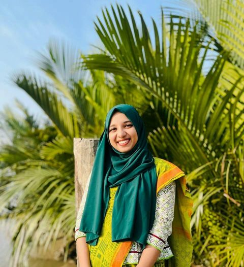
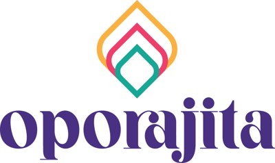
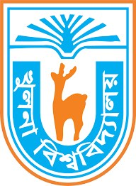
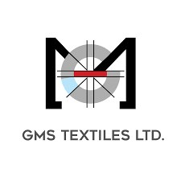
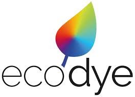
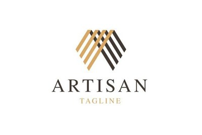

Razu Sarder
Chief Executive OfficerLeads Orgiin’s vision, strategy and technology.
We infuse nature’s vibrant hues into sustainable creations, turning eco-friendly dyes into stunning artistry for your brand.
Orgiin was started at Khulna University by a team of technologists, textile, chemical and pharmaceutical specialists who believe beautiful colour should not cost the earth.
Eco-friendly dye solutions with service that brings your brand’s vision to life.
Organic dye powders that bring the colours of the earth to your products — no harsh synthetic chemicals.
Natural colour at a low cost, so sustainable choices fit inside your budget.
Lasting, vibrant shades made with practices that respect the planet and its people.
Share your fabric, quantity, shades and timeline.
Our colour and textile experts craft a natural dye match.
Review swatches before full production begins.
We deliver dye powder or dyed material, anywhere in Bangladesh and beyond.
To illuminate the world with the beauty of natural products, empower communities, and nurture a planet where eco-friendly choices blossom.
Every shade reflects our commitment to renewal — natural dyes and eco-conscious practice, start to finish.
We help local artisans turn traditional skills into steady livelihoods and enrich communities.
A palette in balance with nature, so creativity and the environment thrive together.
Technology, textiles, chemistry and marketing — one team, one palette.
Leads Orgiin’s vision, strategy and technology.
Builds the Orgiin brand and brings natural dyes to new customers.

Part of the team that started Orgiin.
Guides fabric preparation and dye fastness.
Develops and tests our natural colour recipes.
Ensures our plant extracts are safe and consistent.

Oporajita
Khulna University
GMS Textiles Ltd.
EcoDye
ArtisanNatural dye powders made from plant sources, plus dyeing support for brands, boutiques and artisans who want eco-friendly colour.
Our core promise is low-cost natural dye. Send us your fabric type, quantity and target shades through the order form and we will reply with a quote.
It depends on colours and quantity. Tell us your deadline when you order and we will confirm what is possible.
We work from your reference shade or swatch and develop a natural recipe as close as the source plants allow. Natural colours can vary slightly between batches.
Our dyes are made from plant-based materials, avoiding the harsh chemicals of many synthetic dyes.
Contact us with your requirements. We review them, discuss the best approach with you, and then begin production.
Tell us what you need and we will get back to you.
Address
Khulna University, Khulna, Bangladesh
Phone
+880 1917 195518
Marketing
Moonjila, Marketing Manager
Leadership
Razu Sarder, CEO